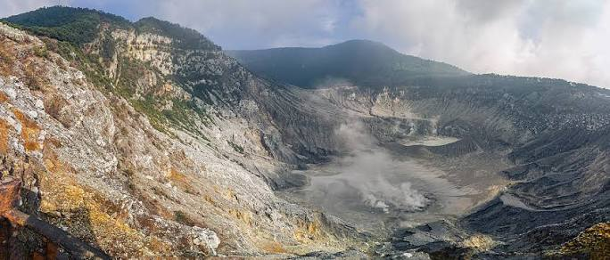
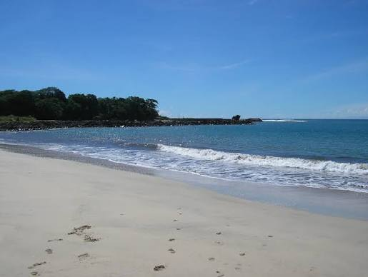

Gunung Tangkuban Parahu
Gunung berapi di Lembang dengan kawah yang bisa dikunjungi dari tepi jalan.

Temukan Destinasi Terbaik
Klik peta interaktif di bawah ini untuk mulai eksplor destinasi wisata terbaik dari setiap provinsi di Indonesia.

Jelajahi gunung dan pantai di sekitar Bandung, Jawa Barat.
Gunung berapi di Lembang dengan kawah yang bisa dikunjungi dari tepi jalan.

Danau kawah di Ciwidey dengan air berwarna putih kehijauan.

Pantai di pesisir selatan Garut, salah satu pantai yang bisa dijangkau dari Bandung.